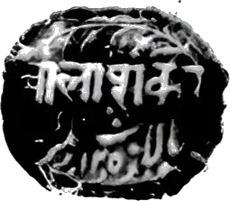

Daftar
Daftar: Notes from the Past and the Present is a newsletter on history, politics, and the present — dispatches from the archives and from the world.
It is published on Substack.
Read Daftar on Substack →Daftar: Notes from the Past and the Present is a newsletter on history, politics, and the present — dispatches from the archives and from the world.
It is published on Substack.
Read Daftar on Substack →